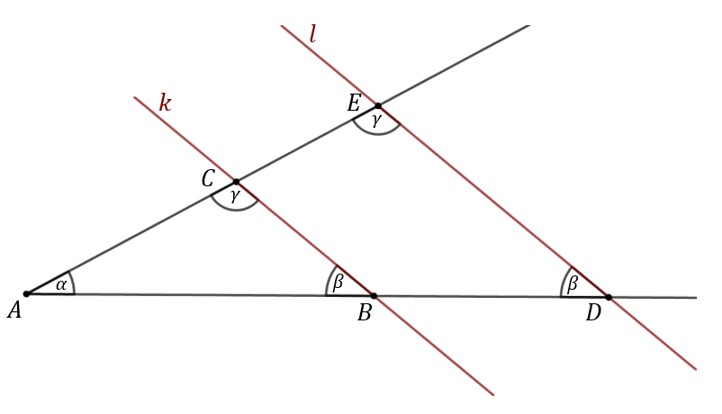
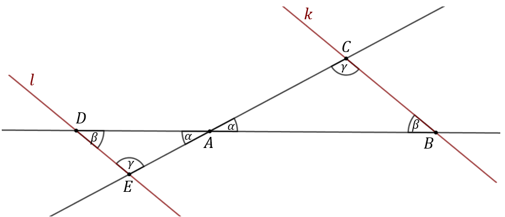
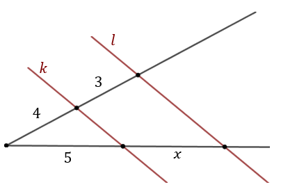
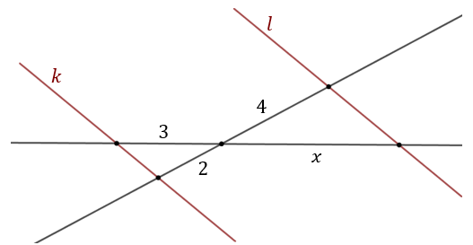

Twierdzenie Talesa
Twierdzenie Talesa mówi, że jeżeli przetniemy kąt
prostymi równoległymi, to stosunki odpowiednich otrzymanych odcinków będą równe.  Na powyższym rysunku kąt \(\alpha \)
przecięto prostymi równoległymi \(k\) i \(l\). Wówczas zgodnie z twierdzeniem Talesa zachodzą
następujące proporcje: \[\frac{|AB|}{|AC|}=\frac{|BD|}{|CE|}=\frac{|AD|}{|AE|}\] z których wynika
również, że: \[\frac{|AB|}{|BD|}=\frac{|AC|}{|CE|}\] oraz: \[\frac{|AB|}{|AD|}=\frac{|AC|}{|AE|}\] a
także: \[\frac{|AD|}{|BD|}=\frac{|AE|}{|CE|}\] Powyższe stosunki zachodzą również, gdy proste równoległe
przecinają kąty wierzchołkowe: 
Twierdzenie Talesa jest mocno powiązane z podobieństwem
trójkątów. Obie metody zapisywania stosunków odcinków często można stosować wymiennie.
Proste \(k\) i \(l\) są równoległe. Oblicz długość odcinka \(x\). 
Korzystamy z twierdzenia Talesa: \[\begin{split} \frac{5}{x}&=\frac{4}{3}\\[6pt]
4x&=5\cdot 3\\[6pt] x&=\frac{15}{4} \end{split}\]
Proste \(k\) i \(l\) są równoległe. Oblicz długość odcinka \(x\). 
Korzystamy z twierdzenia Talesa: \[\begin{split} \frac{4}{2}&=\frac{x}{3}\\[6pt]
2x&=4\cdot 3\\[6pt] x&=6 \end{split}\]
W tym filmie wyjaśniam twierdzenie Talesa i pokazuję jak je stosować na
przykładach.
Czas nagrania: 16 min.
W trójkącie \(ABC\) punkt \(D\) leży na boku \(BC\), a punkt \(E\) leży na boku
\(AC\). Odcinek \(DE\) jest równoległy do boku \(AB\), a ponadto \(|AE|=|DE|=4\), \(|AB|=6\) (zobacz
rysunek).  Odcinek \(CE\) ma
długość
Odcinek \(CE\) ma
długość
Odcinek \(CE\) ma
długość A.\( \frac{16}{3} \)
B.\( \frac{8}{3} \)
C.\( 8 \)
D.\( 6 \)
C
Dany jest trójkąt \(ABC\) o polu równym \(P\). Odcinki \(IJ\) i \(GH\), których
końce leżą na bokach trójkąta, są równoległe do boku \(AB\) i przecinają wysokość \(CD\) w punktach
\(E\) i \(F\) takich, że \(|CE|=|DF|=\frac{1}{4}\cdot |CD|\) (zobacz rysunek).  Pole trapezu \(GHJI\) jest równe
Pole trapezu \(GHJI\) jest równe
Pole trapezu \(GHJI\) jest równe
A.\( \frac{1}{2}P \)
B.\( \frac{9}{16}P \)
C.\( \frac{2}{3}P \)
D.\( \frac{3}{4}P \)
A